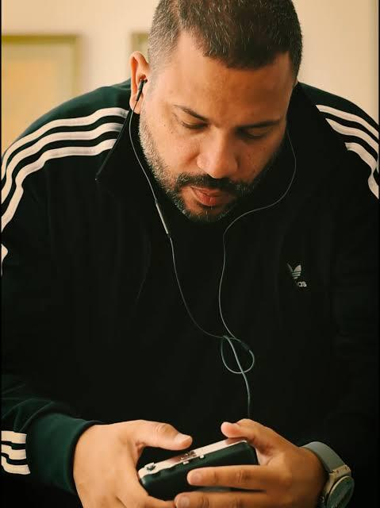

|
Moleque de Vila
Projota - Foco, Força e Fé (albúm) |
| “Moleque de Vila” é uma música do rapper brasileiro Projota, lançada em 2016. A canção fala sobre sua trajetória, suas dificuldades e a vontade de vencer mesmo diante dos obstáculos. |
| Curiosidade: “Muleque de Vila” é a música que acabou virando inspiração para atletas. Em 2016, o atleta paralímpico Daniel Martins contou que ouviu a música antes de conquistar o ouro nos 400 metros e ainda bateu o recorde mundial da prova. |
|
Se liga numa pequena parte da letra!
Olha lá o outdoor com o meu nome Me emocionar não me faz ser menos homem Se o diabo amassa o pão, você morre ou você come? Eu não morri e nem comi, eu fiz amizade com a fome — Projota Clique aqui para ver a letra completa. |
|
O Sucesso absoluto!
a fórmula do sucesso foi identificação + história real + superação + um refrão marcante + conexão com momentos importantes do Brasil. Isso fez a música ultrapassar o público do rap e chegar a muitas outras pessoas |
|
 |
|
℗ 2016 EMI Records Brasil Ltda.
Voltar para a Página Inicial |